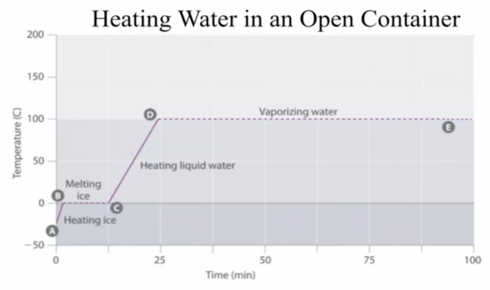

statistical mechanics • boiling • Hagedorn temperature
Why water stops getting hotter at the boiling point?
The Kittel zipper and the smallest useful model of latent heat
August 30th, 2026
Finally, our book, Volume 3, is available for pre-order: Practical Statistical Mechanics: Volume 3. Let me tell you about one of my favourite models discussed in the book. This blog post has to do with boiling. There are many models that I like, but this is truly one of the simplest ways of seeing what boiling looks like from the point of view of statistical mechanics, without invoking any complicated mathematics.
Boiling is an interesting dynamical state of a liquid. As you might know, I am now back in Italy, where millions of people make pasta every day. It is cheap, fast and a good source of carbs. The order of operations is important (!): take a pot, put water in it, turn on the heat, wait for the water to boil and only then (!) add the pasta. Let it cook until it is soft enough, and no longer. Jokes aside, boiling has several genuinely interesting features.
First, a short excursus. There is a nice video on YouTube explaining the basic features of boiling points here.

The interesting question is what happens after boiling starts. Keep supplying heat to water at atmospheric pressure and, as long as liquid water remains, its temperature stays close to the boiling point. The energy has not disappeared. It is being used to turn liquid into vapour. Vapour bubbles are created near the heat source and, because vapour is less dense than liquid water, buoyancy carries them upwards.
If we measured the temperature, we would see it increase after the heat source is turned on, until it reaches the boiling point. For water at atmospheric pressure this is approximately 100 Celsius degrees. After that, the added energy mostly pays the energetic cost of the phase change. It is not simply ejected from the fluid: it becomes latent heat and leaves with the vapour.
Something visually similar happens on the Sun, and one can watch it here. The solar surface is not literally boiling water: what we see is granulation caused by convection. The scale is also slightly different. A solar granule can be roughly the size of Texas. This is what having nuclear fusion as the ultimate heat source does to you.
Now the question is: how do we understand the temperature plateau from a statistical-mechanics perspective? Surprisingly, we can reproduce its basic logic with a model containing no liquid molecules, bubbles or hydrodynamics. We need only something closer to a DNA strand: Kittel's molecular zipper. It will also give us a particularly clean explanation of what people mean by a Hagedorn temperature.
1. What must a model of boiling explain?
Let us first decide what we are trying to explain. We are not trying to reproduce the shape of the bubbles, the motion of the water in the pot or the details of the liquid-vapour interface. Those are difficult and interesting problems, but they are not the point here. We want to explain only the following observation: why can we keep adding energy at the boiling point without appreciably increasing the temperature?
Let me recall what is the important quantity to look at, which is free energy. This is given by
Let me first provide a picture of the phenomenon. Before boiling, adding energy makes molecular motion more agitated, and the temperature rises. At the boiling point a second option becomes available: a molecule can leave the liquid and join the vapour. This costs energy, because the molecule must escape the interactions that kept it in the liquid. But the vapour also offers many more ways of arranging the same molecules. In statistical mechanics language, the vapour wins in entropic terms, which is what the whole point is about.
So what are the minimum ingredients? We need a bound phase with low energy, an unbound phase with many more microscopic configurations, and a way to progressively convert one into the other. That is already enough. Kittel's molecular zipper model, which we discuss below, does just that.
2. Kittel's zipper
Let us now introduce Kittel's model. Imagine a zipper with $N$ links. It can open from one end only, just like an ordinary zipper in pants: link number two cannot open before link number one, link number three cannot open before the first two, and so on and so forth. The model was originally introduced as a caricature of molecular unzipping, such as the separation of two strands of a molecule (the reference is at the bottom of this article).
Opening one link costs an energy $\varepsilon$. Therefore, if $n$ links are open, the total energy is simply
So far this is almost embarrassingly simple. But now comes the assumption that does all the work. Once a link is open, it can move around in $q$ different ways. You can think of these as $q$ possible orientations of the open link. If one link is open there are $q$ possibilities; if two are open there are $q^2$ possibilities; and if $n$ are open there are
microscopic configurations. This is the key. Opening the zipper is expensive in energy, but profitable in entropy. Energy would like to keep it closed; entropy would like to open it.
Notice also that $q$ must be larger than one. If $q=1$, opening a link produces no new multiplicity and therefore no entropic reward. In that case there is no finite transition temperature. The entire phenomenon comes from the competition between an energy that grows like $n$ and a number of states that grows like $q^n$.
3. Energy against multiplicity
Let us now do the small amount of statistical mechanics that we need. A configuration of energy $E_n$ receives the Boltzmann weight $\exp[-E_n/(k_{\mathrm B}T)]$. Since the energy is $n\varepsilon$, this gives a factor $\exp[-n\varepsilon/(k_{\mathrm B}T)]$.
But there is not only one configuration with $n$ links open. There are $q^n$ of them. We must therefore multiply the Boltzmann factor by this multiplicity. The total weight of the sector with $n$ open links is
It is useful to give the quantity in parentheses a short name,
because then the partition function is nothing more exotic than a geometric series:
And that is essentially the entire calculation. If $x<1$, every additional open link reduces the statistical weight: terms get smaller as $n$ grows and the zipper prefers to remain near the closed end. If $x>1$, the terms grow with $n$ and the zipper runs towards the open end. The borderline case is $x=1$, where every value of $n$ has the same statistical weight.
For a finite zipper this change is smooth; a finite sum cannot produce a true thermodynamic singularity. The sharp phase transition appears when we let $N\rightarrow\infty$. This is the usual thermodynamic limit, only here we can see the whole mechanism inside a first-year geometric series.
4. The Hagedorn temperature
We can now find the special temperature. At the borderline, $x=1$, so $q\exp[-\varepsilon/(k_{\mathrm B}T)]=1$. Solving for $T$ gives
Below this temperature the energy cost wins and the zipper is closed. Above it the multiplicity wins and the zipper opens. At the transition neither side wins.
But why call this a Hagedorn temperature? To see it, we eliminate $n$ from the problem. Since $E=n\varepsilon$, the number of states at energy $E$ is
In other words, the number of possible configurations grows exponentially with energy. This is unusual enough to be dangerous. The Boltzmann factor tries to suppress high energies as $\exp[-E/(k_{\mathrm B}T)]$, while the density of states grows as $\exp[E/(k_{\mathrm B}T_{\mathrm H})]$. Below $T_{\mathrm H}$ the Boltzmann suppression is stronger. At $T_{\mathrm H}$ the two exponentials cancel exactly. Above it, the partition function of the infinite zipper does not converge.
This is the Hagedorn mechanism in its most naked form. Rolf Hagedorn encountered a similar exponential proliferation in the statistical description of hadrons. If increasing the energy keeps producing new states fast enough, the system spends its energy populating those states instead of becoming hotter. What looks like a maximum temperature is normally a warning that the present description has reached a new phase and that different physics must take over.
5. Where the latent heat goes
We can finally return to the pot of water. There is another way of looking at the zipper which makes the connection to latent heat almost immediate. If $n$ links are open, there are $q^n$ configurations, and therefore the entropy is
The microcanonical definition of temperature is $1/T=\partial S/\partial E$. Here the entropy is a straight line as a function of energy, so its slope is constant:
This is the result we were looking for. We can add energy, open more links and move from the closed phase to the open one, but the temperature remains $T_{\mathrm H}$. The extra energy changes how much of the zipper is open; it does not make the zipper hotter. Opening all $N$ links requires the energy $N\varepsilon$. This is our analogue of latent heat.
If you prefer the canonical language, the same point can be made using the free energy I discussed at the beginning of the post. Opening one link costs the energy $\varepsilon$, but it gains the entropy $k_{\mathrm B}\ln q$. The free-energy difference per link is therefore
Below $T_{\mathrm H}$ this is positive, and opening is too expensive. Above $T_{\mathrm H}$ it is negative, and entropy pays the bill. Exactly at $T_{\mathrm H}$, energy and entropy cancel.
For real boiling at fixed pressure, the appropriate quantity is the Gibbs free energy rather than the simple energy used by the zipper: $\Delta g=\Delta h-T\Delta s$. At the boiling point the liquid and vapour have the same Gibbs free energy. The latent heat supplies the enthalpy needed to convert more liquid into vapour while the temperature remains approximately fixed. The zipper is not a microscopic model of water, but it gets this balance exactly right.
6. What the zipper leaves out
Let me stress the obvious before somebody complains: the zipper is not water. It has no pressure, no volume, no interface, no bubbles, no surface tension and no nucleation barrier. In fact, in water you can reduce the pressure so much that as the system is boiling, you literally have ice in the water (the vide above will show it). I recall the pleasing fact, when I was back in New Mexico, that my Italian moka boiled sooner just because we were at high altitudes. Also, the model does not tell us where bubbles form or how quickly they rise. Its links must also open in a prescribed order, an artificial rule that makes the model solvable and allows it to display a sharp transition despite being one-dimensional.
But this is also the reason the model is useful. It throws away almost everything about boiling and keeps precisely the piece we wanted to understand: a bound phase with few configurations, an unbound phase with many configurations, an energy cost for moving from one to the other, and a temperature at which that cost is exactly compensated by entropy.
At that temperature, adding heat no longer means “make the same phase hotter.” It means “make more of the new phase.” Kittel's zipper reduces this idea to a geometric series, and reduces the Hagedorn temperature to a race between two exponentials. That's what I love about this model. Not bad for a zipper! cheers